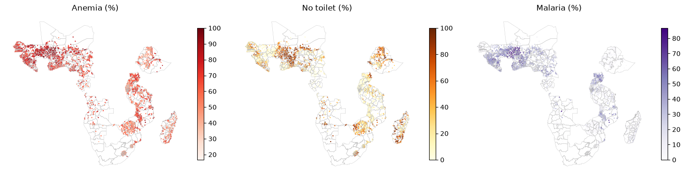

import json
import h3
import numpy as np
import pandas as pd
import geopandas as gpd
import rasterio
import xarray as xr
import matplotlib
import matplotlib.image
from matplotlib import cm, colors
from shapely.geometry import Polygon
from config import PRIVATE, PUBLIC, MAP_DIR, CHIRPS_MONTHLY, AFRICA_BBOXStep 6. Aggregate private cluster results into PUBLIC, non-identifying outputs.
DHS forbids sharing cluster GPS points, so everything published is aggregated: * hexagons (H3 resolution 4, ~23 km edge, ~1,770 km2), hidden if < 3 clusters * admin-1 regions, hidden if < 5 clusters * open raster layers (MAP malaria, CHIRPS rainfall) as map images
Output (data/public/): hexes.geojson, regions.geojson, profiles_by_country.csv, raster_*.png + raster_bounds.json, sample_summary.json
Run on the author’s computer. The DHS data are private, so the outputs shown here are summaries only (no cluster locations or survey records).
H3_RES, MIN_HEX, MIN_REGION = 4, 3, 5
cl = pd.read_parquet(PRIVATE / "clusters_final.parquet")
allc = pd.read_parquet(PRIVATE / "clusters_profiles.parquet") # includes clusters w/o all model features
allc = allc.merge(cl[["idhspsu", "pred_rf", "resid_rf", "abs_err_rf"]], on="idhspsu", how="left")
n_prof = allc.profile.max()def summarise(g):
out = g.agg(n_clusters=("idhspsu", "size"), n_children=("n_children", "sum"),
anemia_pct=("anemia_pct", "mean"), modsev_anemia_pct=("modsev_anemia_pct", "mean"),
od_pct=("od_pct", "mean"), pfpr=("pfpr", "mean"),
rain_3mo_z=("rain_3mo_z", "mean"), rain_annual_mm=("rain_annual_mm", "mean"),
wealth=("wealth", "mean"), mom_secondary_pct=("mom_secondary_pct", "mean"),
urban_pct=("urban", "mean"), in_hotspot_pct=("in_hotspot", "mean"),
pred_anemia_pct=("pred_rf", "mean"), resid=("resid_rf", "mean"), abs_err=("abs_err_rf", "mean"),
year_min=("int_year", "min"), year_max=("int_year", "max"),
hot_25=("hot_25", "mean"), hot_50=("hot_50", "mean"), hot_75=("hot_75", "mean"),
hot_100=("hot_100", "mean"),
country=("country", lambda s: s.mode().iat[0]))
for e in (25, 50, 75, 100):
out[f"hot_{e}"] *= 100
out["urban_pct"] *= 100
out["in_hotspot_pct"] *= 100
shares = pd.crosstab(g.obj[g.keys] if isinstance(g.keys, str) else g.obj[g.keys[0]],
g.obj["profile"], normalize="index") * 100
shares = shares.reindex(columns=range(1, n_prof + 1), fill_value=0)
shares.columns = [f"profile{p}_pct" for p in shares.columns]
out = out.join(shares)
out["profile"] = shares.to_numpy().argmax(axis=1) + 1 # most common profile
names = allc.drop_duplicates("profile").set_index("profile").profile_name
out["profile_name"] = out.profile.map(names)
# dominant DBSCAN hotspot id (0 = none)
hs = g.obj[g.obj.hotspot >= 0].groupby(g.keys).hotspot.agg(lambda s: s.mode().iat[0] + 1)
out["hotspot_id"] = hs.reindex(out.index).fillna(0).astype(int)
return outHexagons
allc["hex"] = [h3.latlng_to_cell(la, lo, H3_RES) for la, lo in zip(allc.lat, allc.lon)]
hx = summarise(allc.groupby("hex"))
hx = hx[hx.n_clusters >= MIN_HEX].reset_index()
hx["geometry"] = [Polygon([(lo, la) for la, lo in h3.cell_to_boundary(h)]) for h in hx.hex]
hx = gpd.GeoDataFrame(hx, crs="EPSG:4326").round(2)
hx["hex"] = range(1, len(hx) + 1) # drop the real H3 id
hx.to_file(PUBLIC / "hexes.geojson", driver="GeoJSON")
print(f"Hexes: {len(hx):,} shown (>= {MIN_HEX} clusters), covering {hx.n_clusters.sum():,} of {len(allc):,} clusters")Hexes: 2,037 shown (>= 3 clusters), covering 19,669 of 22,097 clustersAdmin-1 regions
adm = gpd.read_file(PUBLIC / "admin1.geojson")
pts = gpd.GeoDataFrame(allc, geometry=gpd.points_from_xy(allc.lon, allc.lat), crs="EPSG:4326")
pts = gpd.sjoin(pts, adm[["region_id", "geometry"]], how="left", predicate="within")
# clusters falling just outside a polygon (coast, displacement) -> nearest region
miss = pts.region_id.isna()
if miss.any():
near = gpd.sjoin_nearest(pts.loc[miss, ["geometry"]].to_crs(3857),
adm[["region_id", "geometry"]].to_crs(3857), how="left")
pts.loc[miss, "region_id"] = near.groupby(level=0).region_id.first()
pts = pd.DataFrame(pts.drop(columns=["geometry", "index_right"]))
rg = summarise(pts.groupby("region_id")).drop(columns="country")
rg = rg[rg.n_clusters >= MIN_REGION]
regions = adm.merge(rg.reset_index(), on="region_id", how="left").round(2)
regions.to_file(PUBLIC / "regions.geojson", driver="GeoJSON")
print(f"Regions: {rg.shape[0]} of {len(adm)} with >= {MIN_REGION} clusters")Regions: 325 of 334 with >= 5 clustersBy country
bc = (pd.crosstab(allc.country, allc.profile_name, normalize="index") * 100).round(1)
bc["n_clusters"] = allc.groupby("country").size()
bc["anemia_pct"] = allc.groupby("country").anemia_pct.mean().round(1)
bc.reset_index().to_csv(PUBLIC / "profiles_by_country.csv", index=False)Open raster layers as images (for map overlays)
def to_png(arr, path, cmap, vmin, vmax):
rgba = matplotlib.colormaps[cmap](colors.Normalize(vmin, vmax)(arr))
rgba[..., 3] = np.where(np.isnan(arr), 0, 0.75)
matplotlib.image.imsave(path, rgba)bounds = {}
for yr in (2005, 2020):
with rasterio.open(MAP_DIR / f"PfPR_2-10_Africa_{yr}.tif") as src:
a = src.read(1).astype("float32")
a[a < 0] = np.nan
a = a[::2, ::2] * 100 # ~10 km, enough for a web map
to_png(a, PUBLIC / f"raster_malaria_{yr}.png", "YlOrRd", 0, 70)
b = src.bounds
bounds[f"malaria_{yr}"] = [[b.bottom, b.left], [b.top, b.right]]lon0, lat0, lon1, lat1 = AFRICA_BBOX
ann = []
for y in range(1981, 2011):
da = xr.open_dataset(CHIRPS_MONTHLY / f"CHIRPS_monthly_{y}.nc")["precip"]
ann.append(da.sel(longitude=slice(lon0, lon1), latitude=slice(lat1, lat0))[:, ::4, ::4].sum("time").values)
ann = np.mean(ann, axis=0)
ann[ann <= 0] = np.nan
to_png(ann, PUBLIC / "raster_rain_annual.png", "YlGnBu", 0, 2500)
bounds["rain_annual"] = [[lat0, lon0], [lat1, lon1]]
json.dump(bounds, open(PUBLIC / "raster_bounds.json", "w"))Headline numbers
flow = pd.read_csv(PRIVATE / "sample_flow.csv")
summary = {"children": int(allc.n_children.sum()), "clusters": len(allc),
"countries": int(allc.country.nunique()), "surveys": int(allc["sample"].nunique()),
"year_min": int(allc.int_year.min()), "year_max": int(allc.int_year.max()),
"anemia_pct": round(float(allc.anemia_pct.mean()), 1),
"hex_shown": len(hx), "regions_shown": int(rg.shape[0]),
"sample_flow": flow.to_dict(orient="records")}
json.dump(summary, open(PUBLIC / "sample_summary.json", "w"), indent=2)
print(json.dumps({k: v for k, v in summary.items() if k != "sample_flow"})){"children": 236822, "clusters": 22097, "countries": 28, "surveys": 68, "year_min": 2000, "year_max": 2021, "anemia_pct": 63.5, "hex_shown": 2037, "regions_shown": 325}What gets published: hexagons
import matplotlib.pyplot as plt
fig, axes = plt.subplots(1, 3, figsize=(15, 5))
for ax, (col, cmap, title) in zip(axes, [("anemia_pct", "Reds", "Anemia (%)"),
("od_pct", "YlOrBr", "No toilet (%)"),
("pfpr", "Purples", "Malaria (%)")]):
adm.boundary.plot(ax=ax, color="#bbb", lw=0.3)
hx.plot(col, ax=ax, cmap=cmap, legend=True, legend_kwds={"shrink": 0.6})
ax.set_title(title); ax.set_axis_off()
plt.tight_layout(); plt.show()